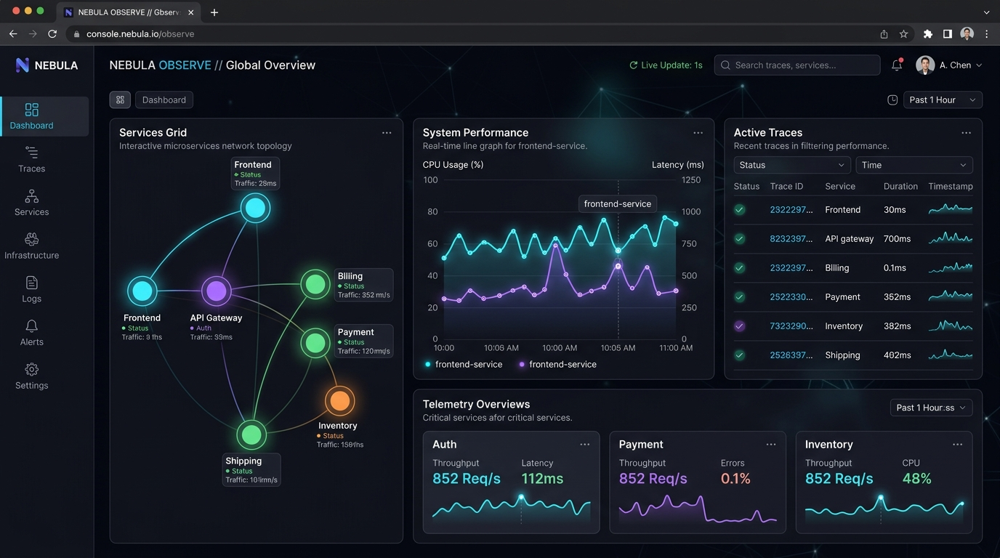
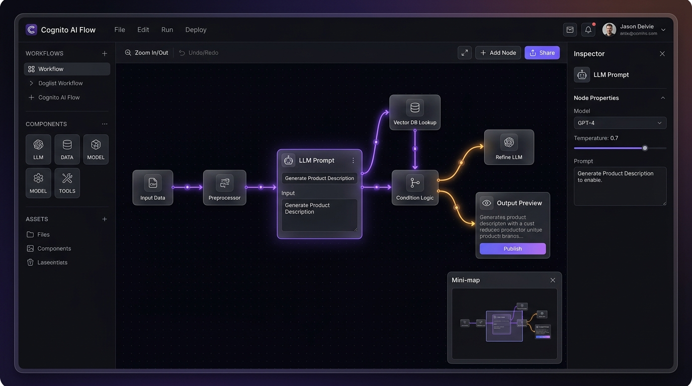
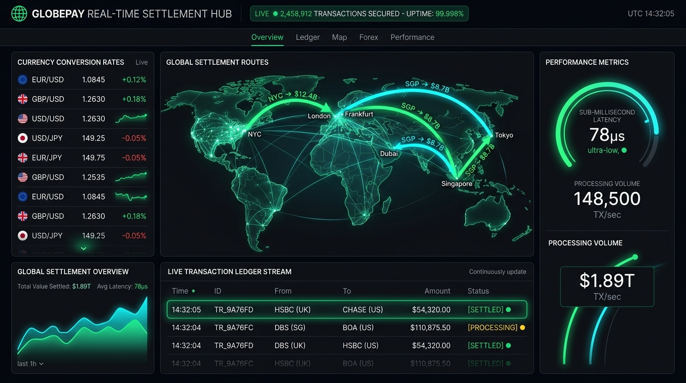
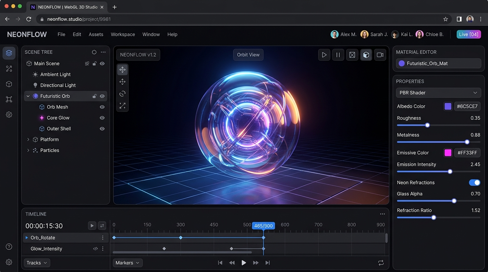

Crafting resilient systems & pixel-perfect SaaS.
I architect high-throughput microservices, sub-millisecond data pipelines, and responsive frontend experiences with deep emphasis on scalability, reliability, and human ergonomics.
Bridging architectural rigor with delightful UX.
I think in distributed topologies, cache hierarchies, and buttery 60fps interaction models.
Over the past 6+ years, I have built and scaled systems ranging from real-time financial settlement engines processing billions in transactions to collaborative WebGL creative tools.
I believe the best software is not just functionally correct, but meticulously engineered under the hood — optimized for zero-copy memory pipelines, deterministic concurrency, and wrapped in an intuitive, ultra-polished user experience.
Tested in high-load production.
Interactive breakdown of language proficiencies, cloud infrastructure, and databases.
Engineered for speed, scale, and clarity.
Explore deep architectural designs, live SaaS applications, and interactive mockups.

Apex Cloud — Autonomous Multi-Cloud Observability
High-throughput distributed telemetry platform capable of ingesting 450k+ OpenTelemetry spans/sec with real-time dependency graph visualization.
- Zero-Overhead Ingestion: Written in Rust/Go with ClickHouse analytical time-series backend.
- Real-time Graph: Dynamic WebGL service mesh topology with automated bottleneck detection.
- Cost Reduction: Adaptive span sampling reduced cloud storage costs by 38%.
NeuralFlow — Real-Time Collaborative AI Canvas
Visual node-based IDE for designing, testing, and deploying chained multi-modal LLM workflows and vector search pipelines with sub-second DAG execution.
- Multiplayer Engine: Built with CRDT synchronization over WebSockets for zero-conflict canvas co-editing.
- Async Execution: Python FastAPI + Celery workers streaming model tokens via Server-Sent Events (SSE).
- Vector Search: Integrated Qdrant vector database for sub-10ms semantic document retrieval.


PulsePay — Global Sub-Millisecond Settlement
Ultra-low latency transactional ledger handling cross-border multi-currency settlement with zero double-spend guarantees and distributed Raft consensus.
- Microsecond Settlement: 78µs deterministic transaction clearing with lock-free memory queues.
- Volume Capacity: Architected to sustain $1.89B monthly volume across 148,500 TX/sec peaks.
- Audit Compliance: Cryptographically signed append-only ledger partitions in CockroachDB.
Hyperion Studio — Collaborative WebGL 3D Engine
Browser-based 3D scene compositor, GLSL PBR shader pipeline, and animation keyframe timeline for next-gen interactive web experiences.
- WASM Performance: Core matrix transformation algorithms compiled to WebAssembly for sustained 60 FPS.
- Shader Customizer: Live GLSL code editor with hot-reloaded dielectric and metallic refractions.
- Asset Export: Automated glTF, USDZ, and WebGPU ready bundle generator.

Live system load & concurrency simulator.
Adjust cluster concurrency, cache hit rates, and replication lag to see mathematical latency modeling in real time.
Proven impact at every scale.
A progressive history of building high-scale distributed systems and leading engineering teams.
- Architected multi-region Go and Kubernetes telemetry ingestion pipeline sustaining 450,000+ spans/second.
- Engineered automated cache warming and Redis sharding layers that lowered average P99 query latency from 85ms to 8.2ms.
- Mentored a team of 14 software engineers across architecture RFCs, distributed tracing, and CI/CD best practices.
- Built high-frequency settlement protocol using Go, Kafka, and CockroachDB processing over $1.8B in monthly transaction volume.
- Designed and delivered a real-time reactive trader dashboard in Next.js, WebSockets, and WebGL with 60 FPS charts.
- Reduced AWS infrastructure costs by $140,000/yr via container optimization and ARM64 Graviton migrations.
- Co-developed zero-to-one visual AI workflow builder from prototype to 25,000+ registered active developers.
- Engineered asynchronous Python/FastAPI microservice cluster with Celery and Redis queuing for GPU model inference.
- Designed entire frontend design system and component architecture with accessible glassmorphic UI patterns.
What engineering leaders say.
Feedback from VP of Engineering, Staff Architects, and Product Directors.
"Alex is one of the rare engineers who possesses both deep distributed systems acumen and an extraordinary eye for UI craft. He turned our complex data pipeline into a work of art."
"When we faced major latency bottlenecks handling 50k QPS, Alex re-architected our Raft consensus layer in Go within weeks. The system has run with zero downtime since."
"Working with Alex is an absolute joy. He operates with high autonomy, delivers rock-solid code, and makes every product decision with the end-user experience front of mind."
Ready to build something extraordinary?
I am currently open to select Staff/Senior Full-Stack engineering roles, founding technical leadership opportunities, and high-impact advisory contracts.